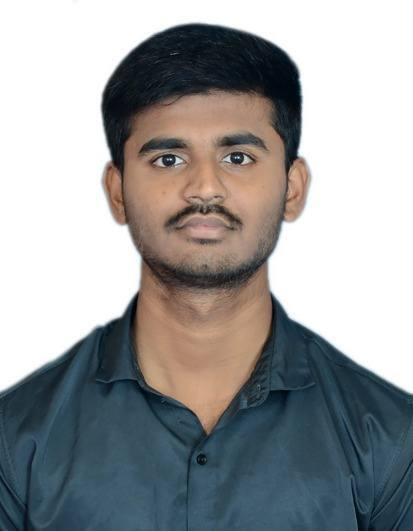
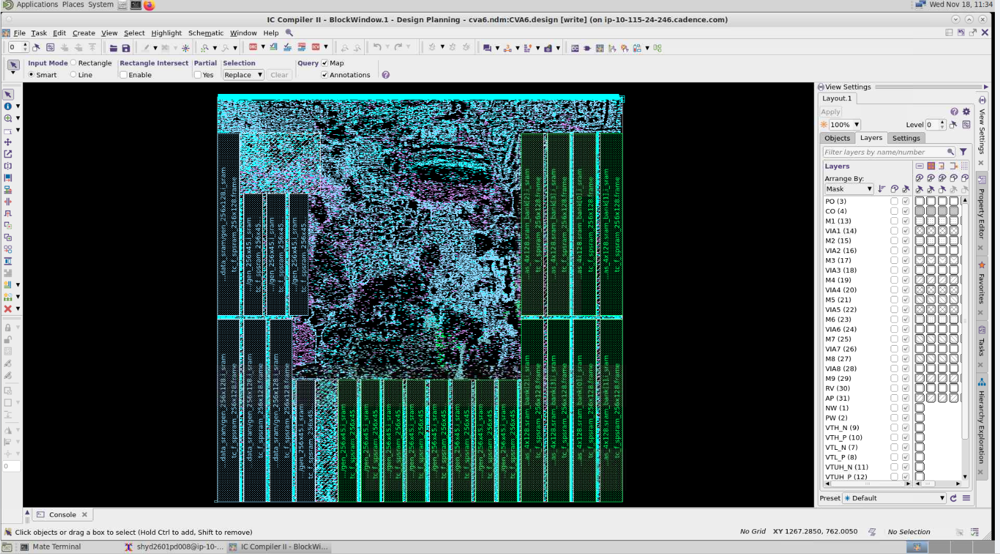
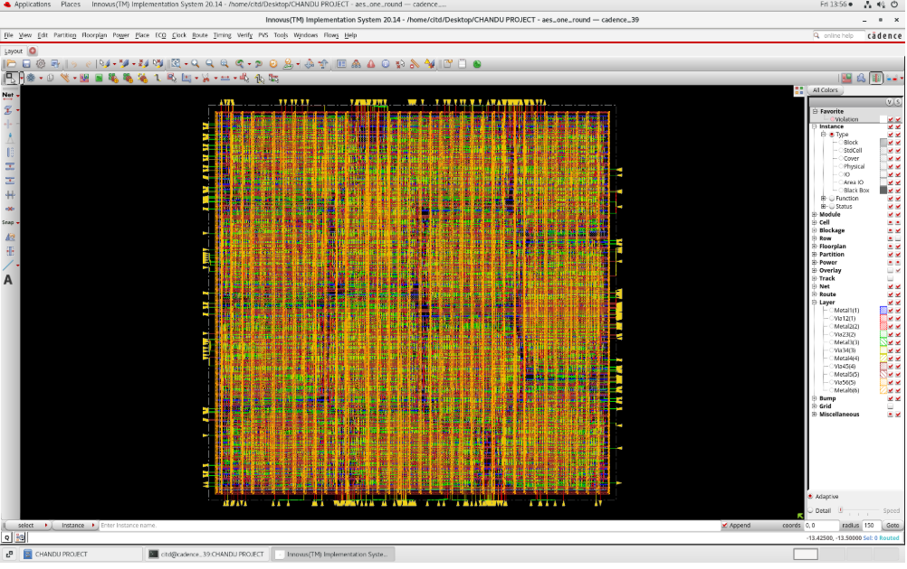
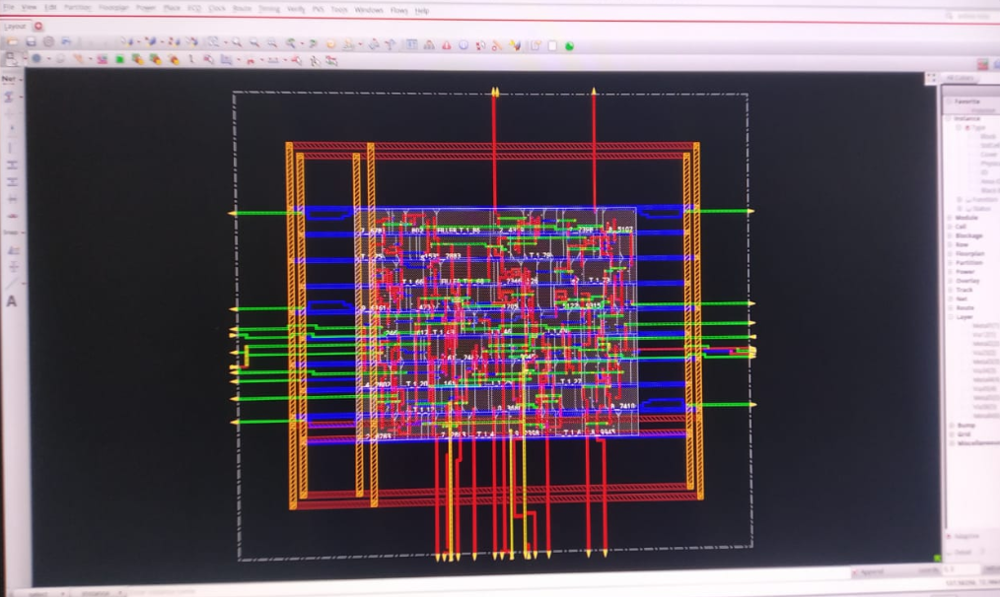
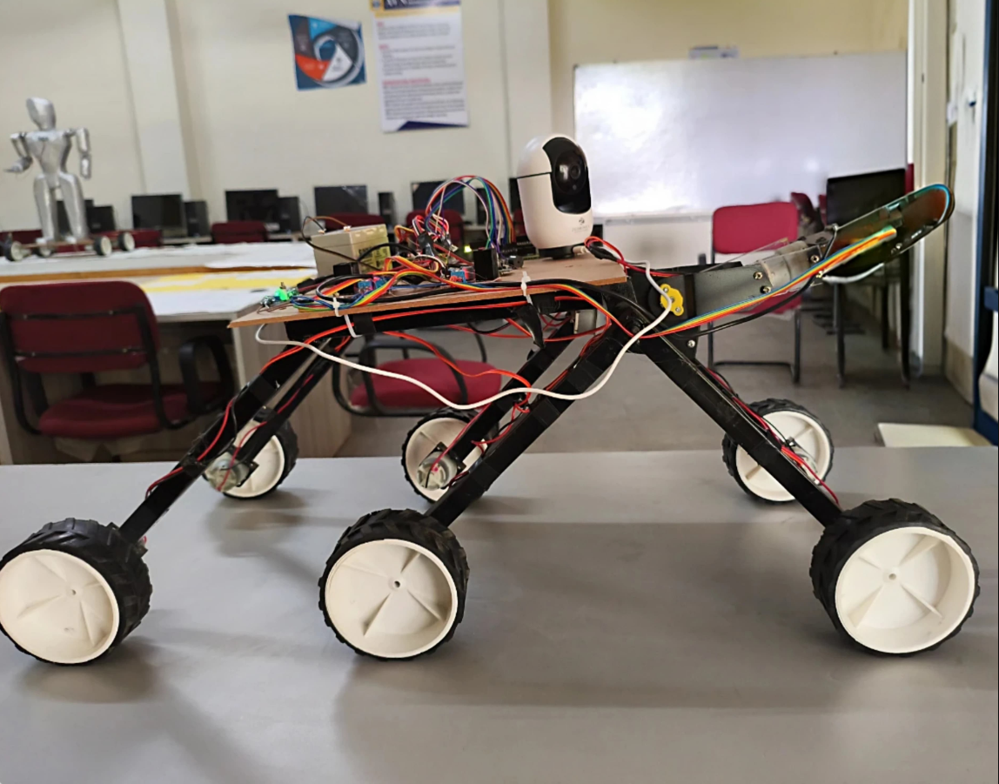

HELLO, I'M
Yellu Harish Reddy
VLSI & Physical Design Engineer
Passionate about Semiconductor Technology, ASIC Design and RTL-to-GDSII implementation. Interested in building efficient and high-performance chip designs.

GET TO KNOW ME
About Me
Electronics & Communication Engineer
I am Yellu Harish Reddy, an Electronics and Communication Engineering graduate with a strong interest in VLSI Design and Semiconductor Technology.
I have undergone training in Physical Design and gained practical exposure to the ASIC RTL-to-GDSII implementation flow using industry-standard EDA tools.
My technical interests include Floorplanning, Placement, Clock Tree Synthesis, Routing, Static Timing Analysis and Physical Verification.
I am continuously improving my technical skills and looking forward to contributing to semiconductor design and engineering projects.
B.Tech – ECE
VLSI Physical Design
Sumedha Institute
ASIC / Physical Design
WHAT I WORK WITH
Technical Skills
Physical Design
Floorplanning, Power Planning, Placement, Clock Tree Synthesis, Routing and Timing Closure.
EDA Tools
Synopsys ICC2, DC Compiler, Cadence Innovus and Cadence Genus.
HDL & Scripting
Verilog, TCL scripting and basic automation.
Static Timing Analysis
Setup and Hold Analysis, Timing Constraints, SDC, Clock Skew and Slack Analysis.
Physical Verification
DRC, LVS, ERC, IR Drop and Electromigration.
Semiconductor Fundamentals
CMOS Technology, MOSFET, Digital Logic and ASIC Design Flow.
MY TECHNICAL WORK
Featured Projects
Exploring semiconductor technology through practical VLSI design and implementation.

TILE – Physical Design
Implemented the Synthesis-to-GDSII flow using Synopsys DC Compiler and ICC2. Worked on synthesis, floorplanning, placement, Clock Tree Synthesis, routing and timing optimization.

CVA6 – Processor Physical Design
Implemented the CVA6 processor through the complete ASIC Synthesis-to-GDSII flow using Synopsys Design Compiler and ICC2. Worked on synthesis, floorplanning, power planning, placement, Clock Tree Synthesis, routing and timing optimization. Also performed ECO changes, EM/IR analysis and physical design verification.

AES Encryption Engine
Designed a one-round AES Encryption Engine using Verilog. Worked on RTL implementation, Cadence-based physical design and post-layout Static Timing Analysis.

4-bit ALU Design
Designed a 4-bit Arithmetic Logic Unit using Verilog HDL, supporting arithmetic and logical operations with digital hardware implementation.

RFID-Based Door Lock System
Developed an RFID-based security system that uses RFID identification to provide controlled door access. The system is designed to improve security through electronic authentication.

Smart Soil Analysis Rover
Developed a six-wheeled smart rover using Arduino Uno to monitor soil moisture, temperature, humidity and metal detection. Integrated HC-05 Bluetooth communication and ThingSpeak cloud for IoT-based monitoring.
MY PROFESSIONAL JOURNEY
Experience & Training
Sumedha Institute
VLSI Physical Design Trainee
Hands-on training in ASIC Synthesis-to-GDSII implementation using Synopsys DC Compiler and ICC2. Worked on synthesis, floorplanning, placement, CTS, routing, STA and timing optimization.
CITD Hyderabad
VLSI Intern
Gained practical exposure to VLSI design, semiconductor fundamentals and digital design concepts through technical training.
LEARNING & ACHIEVEMENTS
My Certifications
VLSI Design Course
Maven Silicon
VLSI CertificationCloud Computing
NPTEL
Online CertificationGET IN TOUCH
Let's Connect
Interested in VLSI, Semiconductor Technology and Physical Design opportunities.
GitHub
Visit my GitHub ProfileLocation
Hyderabad, Telangana, India